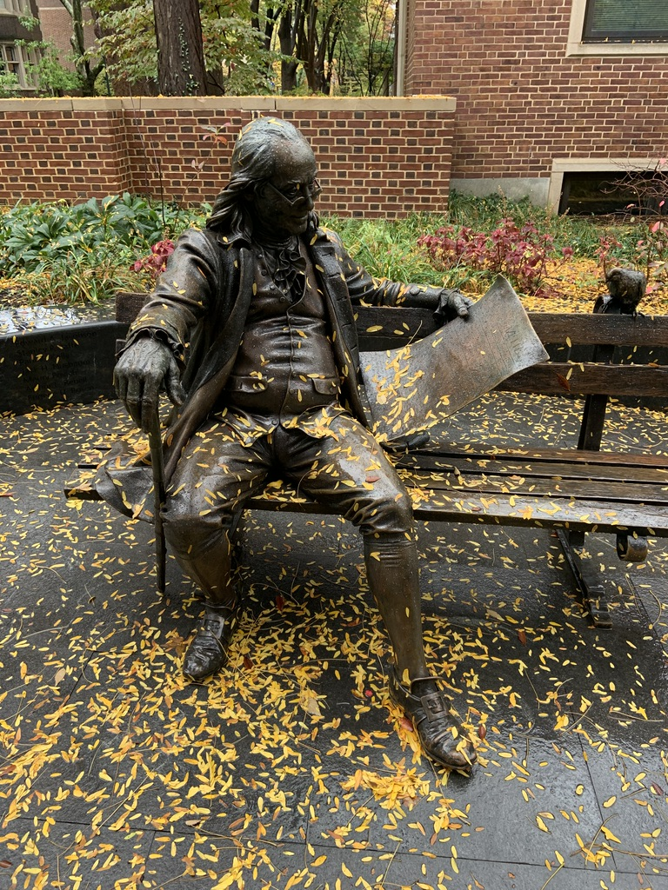
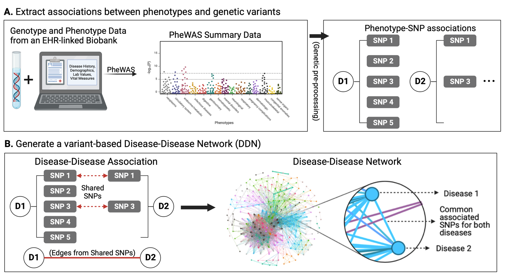
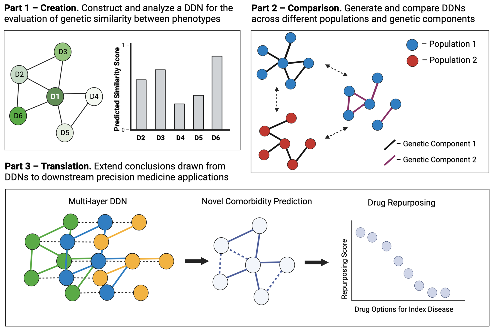

In the next few posts, I will be providing an overview of my PhD in Biomedical Informatics and Computational Genomics that I completed under the mentorship of Dr. Dokyoon Kim at the University of Pennsylvania Perelman School of Medicine. You can listen to a full presentation of my thesis defense here, and you can read the full text of my dissertation here. Note that all figures featured in this blog post were created using BioRender.com. Today’s post will focus on the background context that motivated my research. Without further ado, let’s get started!

Human biology is a complicated field. Millions of cells, cellular components, molecules, and chemicals interact with one another moment by moment to keep us alive each and every day. And while biologists and clinicians have defined a variety of classifications and ontologies to organize and understand these systems, the intricacies of the field continue to require extensive research and investment. Achieving a better understanding of human biology necessitates a unified language.
At the core of human biology and its defined ontologies lies the field of genetics. Genetics refers to the study of heritable traits (also known as phenotypes). If we define genetics as the language of biology, then the vocabulary of genetics would be the gene - a unit of heritable information that influences how we develop and operate. Extending the analogy further, the letters of genetics would be the nucleotide, a set of four molecules whose arrangements define different genes. Indeed, differences in individual nucleotides, also known as single-nucleotide variants/polymorphisms or “SNVs/SNPs”, are responsible for genetic variation across individuals and can lead to differing phenotypic outcomes. Genetic variation is a significant component of the diversity of life.
Given the complex interactions that occur across biomolecules in our bodies, it becomes apparent that networks of interacting genes drive our ability to live. Human diseases can be thought of as disruptions to these networks. The field of medicine aims to prevent, alleviate, and cure disease through the maintenance of health and the development of novel therapeutics.
Unfortunately, for the most part, medicine today still operates from a “good enough” perspective - many patients are treated with the same medications without regard for or understanding of differences in their individual backgrounds or health profiles. Indeed, much more can be done to enhance the accuracy and efficacy of treatment.
The field of precision medicine uses large-scale multimodal/multiomic data to individualize patient care and gain a comprehensive understanding of human health. The goal of precision medicine is to achieve more accurate and precise disease prediction, prevention, treatment, and therapeutics. The field of genomics, involving the study of genetics from a “big data” lens, offers a significant opportunity to advance precision medicine research.
Genomics refers to the study of an individual’s entire set of genes (a.k.a. their genome). We can work with genomic data from large-scale biomedical data, including both electronic health records (EHRs) and patient biobanks. EHRs, also known as electronic medical records (EMRs), refer to large clinical databases of patient medical history and clinical data. Biobanks, on the other hand, refer to biomedical databases with large quantities of patient biological samples, often including access to their genetic information. Combining these two data sources into a merged EHR-linked biobank provides an extra level of power in the study of genomics and medicine. EHR-linked biobanks offer the ability to identify and evaluate statistically significant genetic contributors to human disease. For instance, a genome-wide or phenome-wide association study (GWAS/PheWAS) applied to an EHR-linked biobank can identify associations between a variety of diseases and SNPs.
Many research efforts in the field of precision medicine have used the results of PheWASs to identify genetic contributors to diseases. With such discoveries, patient genetic profiles can be built into diagnosis/treatment pipelines, allowing for the personalization of patient care.
Notably, so far, most precision medicine research efforts that have made their way into the clinic have focused on one disease at a time. However, complex diseases rarely impact patients one-at-a-time. Shared SNPs and genes can contribute to the onset of multiple diseases in a single patient over time. These disease “multimorbidities” can lead to increase healthcare costs, health burdens, and risk of death. Thus, it becomes clear that we must evaluate the genetics of not only individual diseases but also cross-phenotype associations if we wish to gain a deeper understanding of overall patient health.
Given the significance of cross-phenotype associations, the field of “network medicine” offers a helpful framework to investigate the associations between diseases. Thus, the objective of my dissertation was to apply a “network medicine” approach to investigate genetic contributors to disease multimorbidities:

I broke this objective down into three chapters:
- Creation: construct and analyze a network of diseases derived from an EHR-linked biobank for the evaluation of genetic similarity between phenotypes
- Comparison. generate and compare different disease networks generated from different populations and from genetic components.
- Translation. extend the conclusions drawn from disease network analysis and comparison to downstream precision medicine applications.

In the coming week(s), I will go in-depth into the published manuscripts and preprints that correspond to these chapters, as well as my overall takeaways from my PhD research! Till next time~